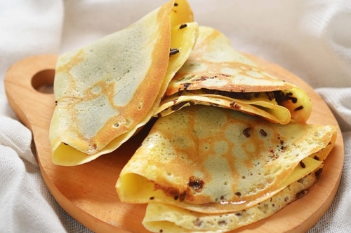
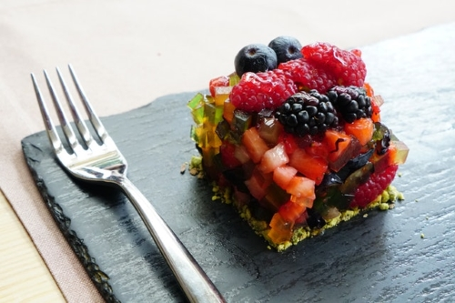

| Home | Lunch | Dinner | Dessert |
Dessert Recipes |
|||
MandaziIf you're interested in trying African cuisine, try topping off a dinner of koshari or muamba chicken with a sweet treat of mandazi. They're often called an African doughnuts and are served with honey, jam, or syrup. Recipe: https://www.allrecipes.com/recipe/262205/mandazi-african-donuts/ |
 |
||
|  |
BaklavaBaklava is a dessert common to many countries across the Middle East and Asia. It's a layered dessert with pastry, nuts, and a honey sauce to hold it together. It can also be topped with a chocolate drizzle. Recipe: https://natashaskitchen.com/baklava-recipe/ |
||